How does it work?
- - The growth rates of the species population in the absence of the other species.
- The effect of the presence of the other species on each species’ growth.
- a is the intrinsic growth rate of the prey species
- b is the effect of the predators on the prey species growth rate; the rate at which predators kill prey
- c is the death rate of the predator species when there are no prey
- d is the effect of the prey on the predator species growth rate; the rate at which the predator population grows from consuming prey
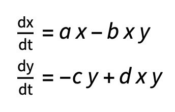
Implementation: In the Wolfram Language
Setting up a Lotka-Volterra model in the Wolfram Language is very straightforward using NDSolve, WL’s numerical differential equations solver.
- Since we know the model takes two initial conditions (species population sizes) and four parameters (a, b, c, d), we can write a helper function that takes in this information and returns the appropriate coupled equations:
Set up the ODEs and initial conditions describing a two-species Lotka-Volterra model:
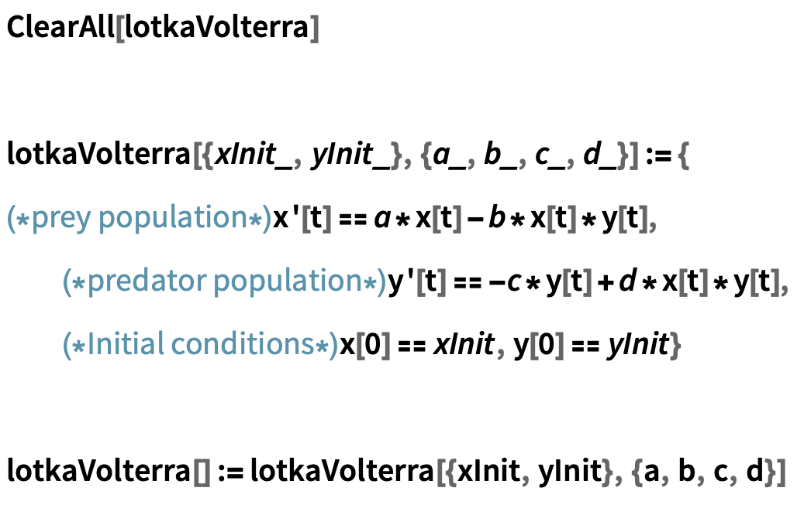
Example:
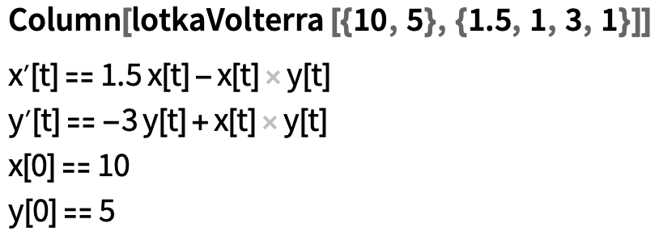
- Now, we can simply call our helper function inside NDSolve, specifying our initial conditions and parameters. Additionally, we supply a list of variables to solve for, and another containing the name and range of the independent variable, t.
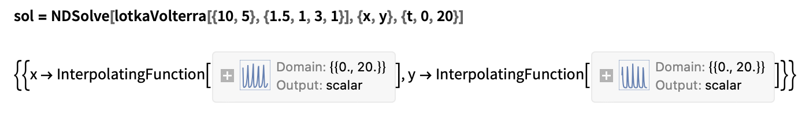
- Finally, we can plot these results in the time domain and state space:
Time domain plot:
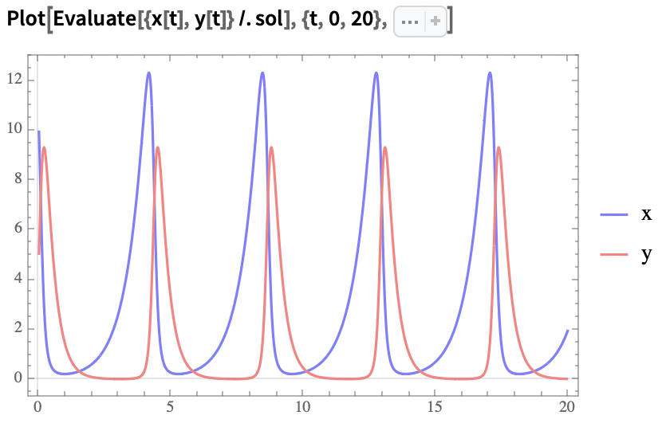
State space portrait: (I have iconised the options to make the code more readable, please visit the original community post to view the full code)
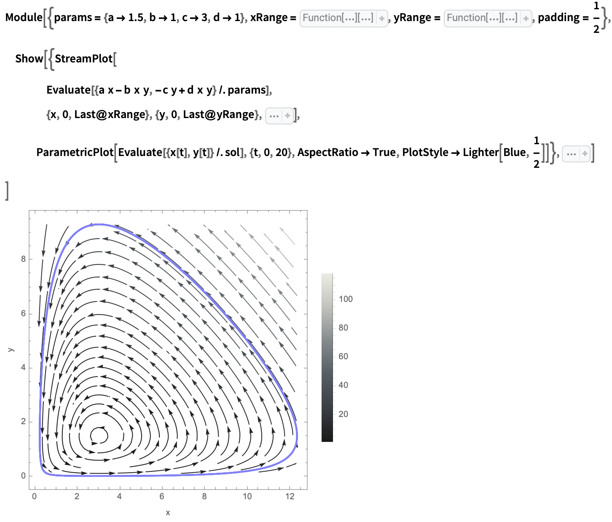
Relationships and Food Webs
Predation Relationships and Food Webs
Suppose we would like to extend our model to three or more species. For a given n-species system, will need too keep track of the relationships between species, and their effects on one another. We will discuss two ways of storing this information: one to facilitate our conceptual understanding of model configurations, and the other to facilitate the process of building the model system of ODEs. We will discuss the first of these ways here.
Notice that as the number of species n in our model grows, so does the number of possible relationships between species (at a rate of 2^n, or 2^(n-1) if we assume the absence of cannibalism in the community). The number of possible combinations of relationships also grows without bounds (at a rate of 2^(n^2), or 2^((n-1)^2)without cannibalism). A set of predation relationships between species is known as a food web.
In a food web, predation relationships are usually represented as arrows from prey to predator species, representing transfer of energy up the web’s component food chains.
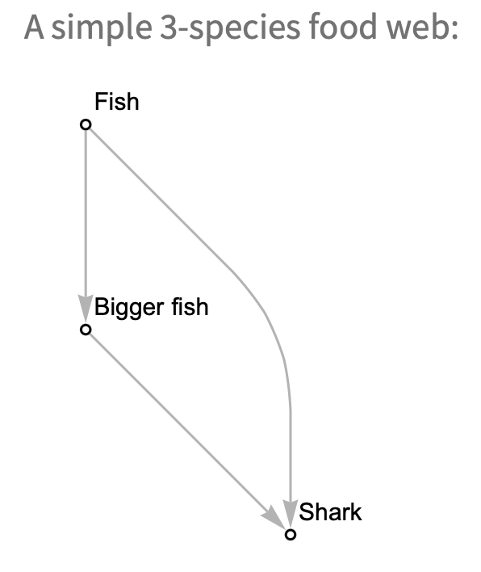
Since food webs are graphs, we can express them directly in the Wolfram Language using Graph objects (see documentation: Graph). Not all food web configurations will be ecologically meaningful, and some will be analogous to one-another, but expressing them like this helps to get a strong qualitative impression of the relationships they depict (Are we modelling a really simple web, or is it very complicated? How tangled is it? How loopy? How close together are the species? Do they form clusters? And so on). We can also answer questions about the food web parameter spaces. For instance: what structurally distinct categories of 3-species food web are there?
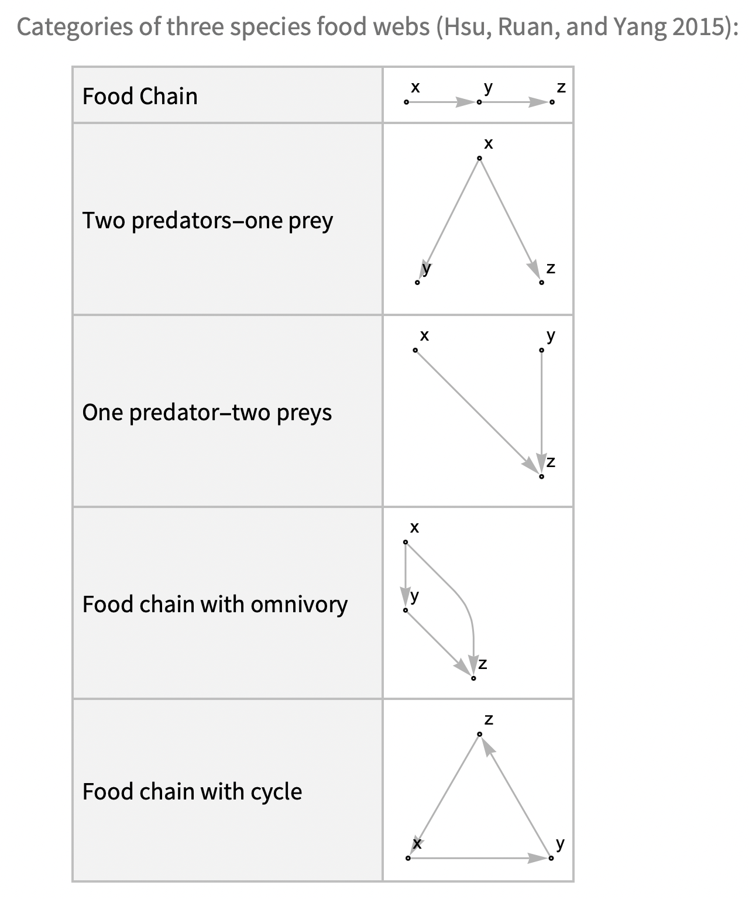
Aside: What species relationships are possible in an n-species system?
We can write a function to generate the possible predation configurations for a species in an n-species food web.
Predation configurations for a species in an n-species food web:
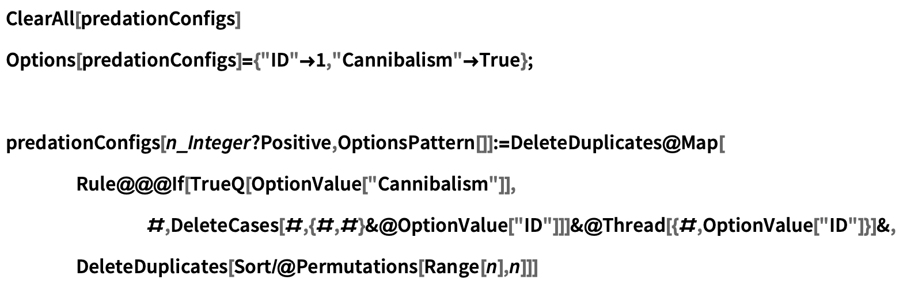
In a 3-species food web, the predation relationship configurations for a species N1 are:
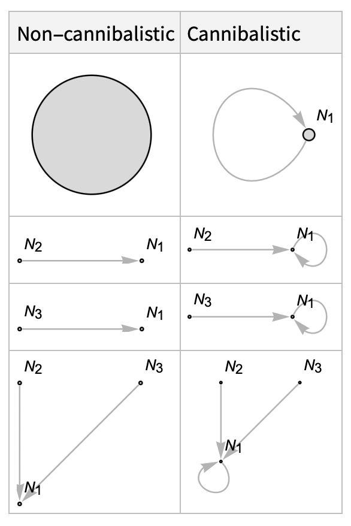
We can sample possible food web configurations randomly, but this will rarely yield realistic food webs for most contexts. Instead, we might restrict configurations to a subset of forms that fit our criteria, or we might simply look to real world systems for examples.
Random valid 3-species food webs (with cannibalism):
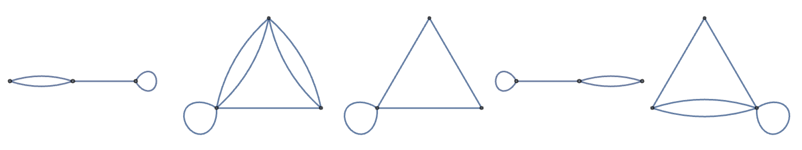
Random valid 3-species food webs (without cannibalism):
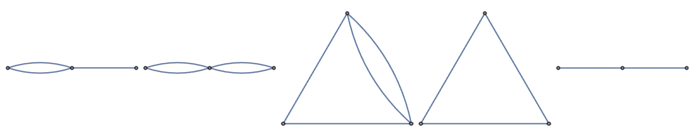
Species to Species Effects Representation: The Community Matrix
Whereas graphs are great at helping us intuit the nature of interactions in a community, we typically express interactions in n-species Lotka-Volterra models using a matrix of interaction coefficients called an interaction matrix. A perk of this strategy is that it allows us to write the generalised Lotka-Volterra model in a condensed form using linear algebra. We will discuss this condensed form shortly. When the matrix stores the effects of species on other species growth rates, we call this matrix a community matrix.
Community matrices are a key concept in quantitative ecology and are used in many competition and predation models. A community matrix A is a square matrix where each element represents the interaction strength between pairs of species in an ecological community. Each cell A[i,j] represents the effect of the average species j individual on species i’s population growth rate (Novak et al. 2016). The principal diagonal of the matrix captures the species self-interactions, which we usually assume to be negative, to capture the effect of interspecific competition. This constrains species growth in the absence of prey, imposing implicit instantaneous carrying capacities of the system for different species.
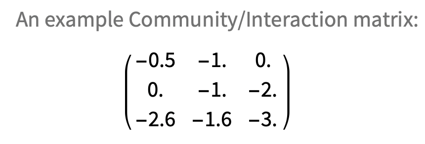
Note that values in an interaction matrix don’t necessarily correspond to predation relationships. If both A[i,j] and A[j,i] are negative, then the two species are considered to be in direct competition with one another as they negatively affect each other’s population. If A[i,j] is positive but A[i,j] is negative then species i is a predator or parasite of species j, since i’s population grows at j’s expense (Positive values for A[i,j] and A[j,i] would be considered mutualism, but we won’t go into that).
To translate between community matrices and food webs, I have implemented some simple tools which you can find definitions for in the original version of this post.
Generalised Lotka-Volterra: How Does it Work?
We can model competition and predation systems with more than two species using the generalised form of the Lotka-Volterra model, which we write:
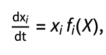
where
- X is a vector of population sizes or densities.
- The vector f is given by f=r+AX, where r is a vector of intrinsic growth rates, and A is the community matrix or interaction matrix of the system.
We will define the intrinsic growth rates slightly differently from our approach for the two-species model, as we assume that each species has a positive intrinsic growth rate. We account for the negative effect of a species' intraspecific competition in the absence of food (on its intrinsic growth rates) in the diagonal of the community matrix.
## Three Species Lotka-Volterra in the Wolfram Language
First, let's define a function to generate ODEs for an n-species Lotka-Volterra model:
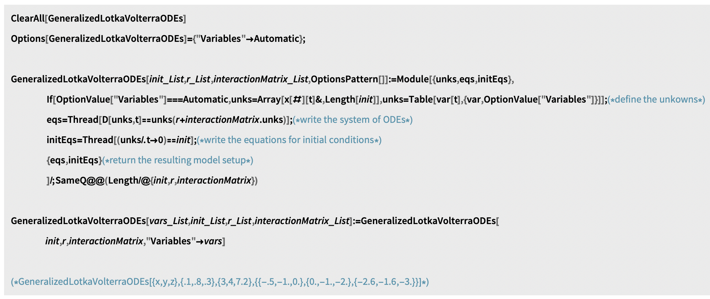
We can use GeneralizedLotkaVolterraODEs to generate the system of ODEs for the given initial parameters:
- vars - a list of variable names (optional),
- init - a list of initial population sizes
- r - a list of species intrinsic growth rates
- interactionMatrix - a matrix describing community interactions (in our examples, a community matrix)
Generate a system of ODEs for a Generalised Lotka-Volterra model from provided parameters:
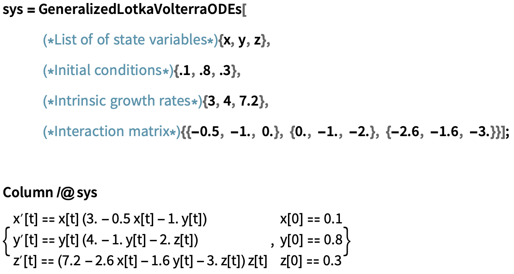
Using CommunityMatrixGraph (see definition in original post), we can construct a weighted graph from the community matrix to get an idea of the relationships that define the system at a glance.
Visualise the community interactions described by the community matrix:
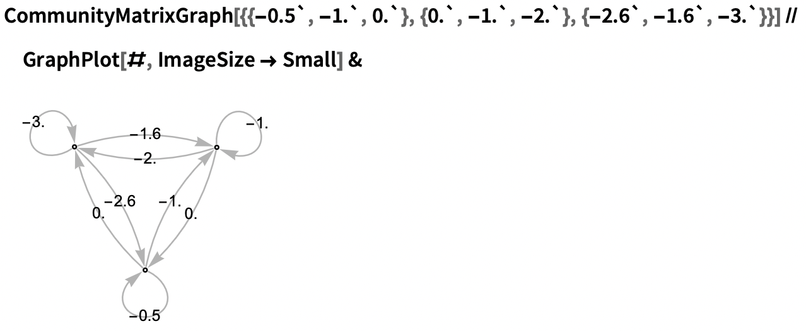
And NDSolve to numerically approximate the population trajectories of the model.
Numerical solutions to the model ODEs:
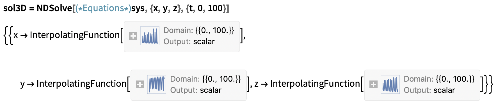
We can then plot the solutions in the time domain and state space:
Time domain plot:
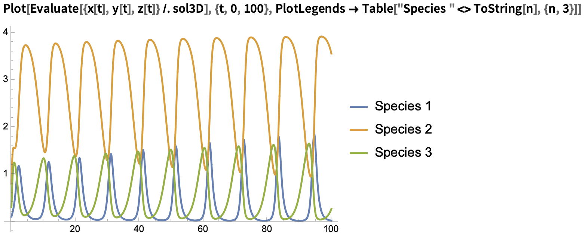
State space portrait (now in 3D!):
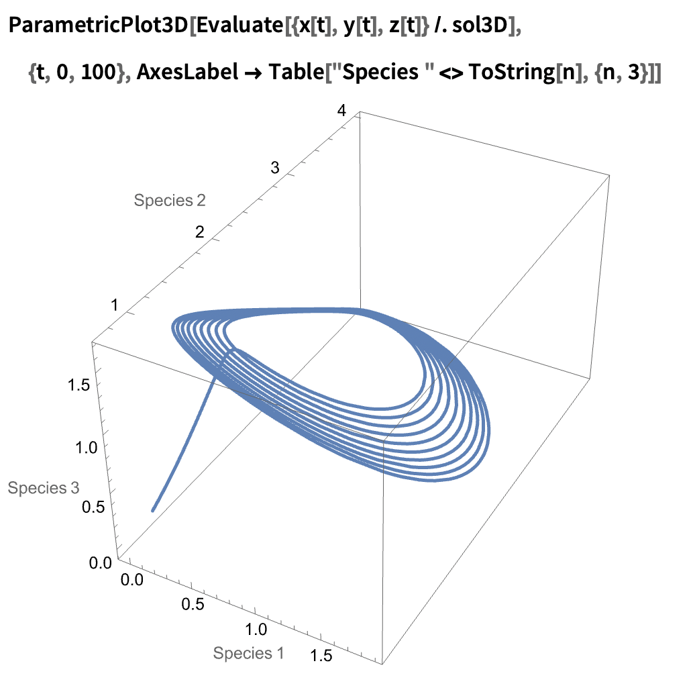
The generalised model we have discussed in this short text extends beyond three species systems. In fact, the tools we have developed will allow us to model any finite n-species closed-food web, that is, any system that we can express using a finite number of species initial population sizes, intrinsic growth rates, and interactions. It should be noted that just because we can specify a model does not always mean we can accurately solve for its behaviour: we are restricted by the limits of numerical approximation and our available computational power)
Still, we can easily model four species webs. Let’s prepare two four species models. We’ll define some weighted webs describing the various interaction effects of our system:
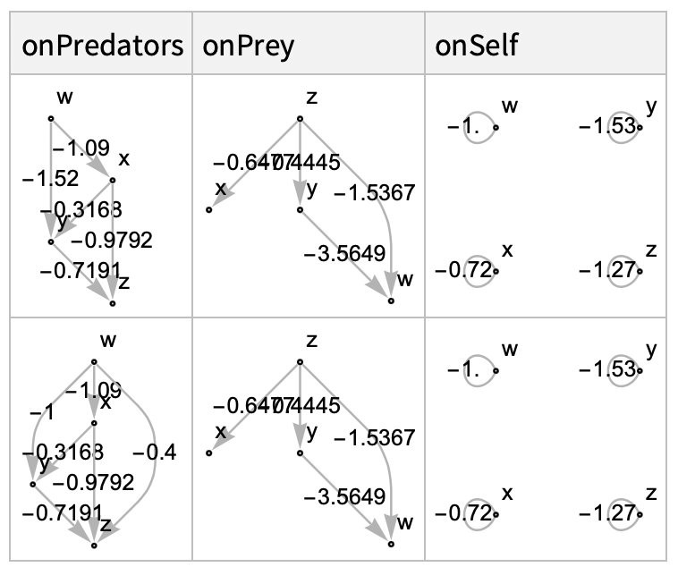
We can construct the community matrix describing either of these using the CommunityMatrix function defined in the original version of this post. For example, take the first row of interaction webs from the above dataset:
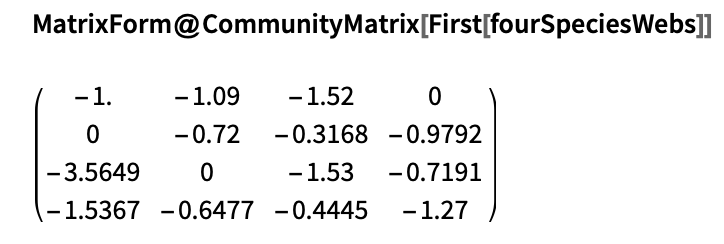
Time domain plot:
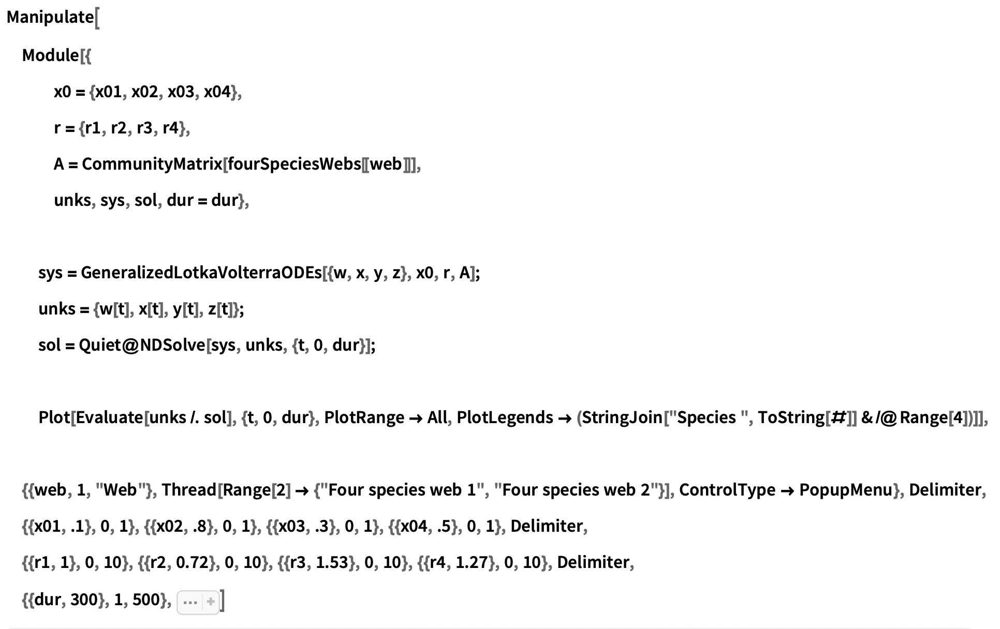
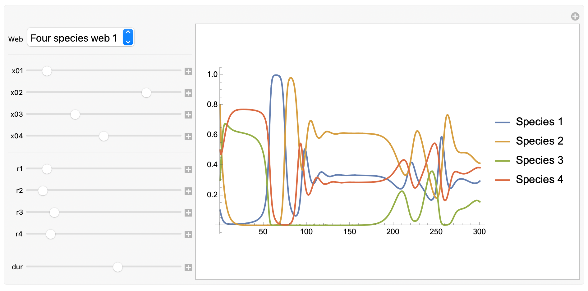
To interact with this graphical user interface, head to the original version of this post.
Note: What happened to the state-space plot? Well, we’ve run out of spatial dimensions to express the behaviour of the system, and in the interest of keeping this post short, we’ll leave things there for now.
Consider what we have achieved in this short text. If you have read this far, I hope to have inspired you to think of how you might answer your own ecological questions in the Wolfram Language. If your questions expand on the subject of this post, I hope the tools I have developed within will help jumpstart your exploration! And please, don’t hesitate to reach out to me with any questions you may have about this work.
Sources Cited
Allesina, Stefano. 2 Generalized Lotka-Volterra | A Tour of the Generalized Lotka-Volterra Model. Accessed 5 October 2023. https://stefanoallesina.github.io/SaoPauloSchool/intro.html.
———. 2 Generalized Lotka-Volterra | A Tour of the Generalized Lotka-Volterra Model. Accessed 5 October 2023. https://stefanoallesina.github.io/SaoPauloSchool/intro.html.
Bacaër, Nicolas. ‘Lotka, Volterra and the Predator–Prey System (1920–1926)’. In A Short History of Mathematical Population Dynamics, edited by Nicolas Bacaër, 71–76. London: Springer, 2011. https://doi.org/10.1007/978-0-85729-115-8_13.
Baigent, Steve. ‘Lotka-Volterra Dynamics - An Introduction.’, 2010.
Hsu, Sze-Bi, Shigui Ruan, and Ting-Hui Yang. ‘Analysis of Three Species Lotka–Volterra Food Web Models with Omnivory’. Journal of Mathematical Analysis and Applications 426, no. 2 (15 June 2015): 659–87. https://doi.org/10.1016/j.jmaa.2015.01.035.
Kingsland, Sharon. ‘Alfred J. Lotka and the Origins of Theoretical Population Ecology’. Proceedings of the National Academy of Sciences of the United States of America 112, no. 31 (4 August 2015): 9493–95. https://doi.org/10.1073/pnas.1512317112.
Lee, Benjamin. ‘Determination of the Parameters in Lotka-Volterra Equations from Population Measurements---Algorithms and Numerical Experiments’. SIAM Undergraduate Research Online 14 (1 January 2021). https://doi.org/10.1137/20S1383161.
Lotka, Alfred J. ‘Analytical Note on Certain Rhythmic Relations in Organic Systems’. Proceedings of the National Academy of Sciences of the United States of America 6, no. 7 (July 1920): 410–15.
———. ‘Contribution to the Theory of Periodic Reactions’. The Journal of Physical Chemistry 14, no. 3 (1 March 1910): 271–74. https://doi.org/10.1021/j150111a004.
———. ‘Natural Selection as a Physical Principle*’. Proceedings of the National Academy of Sciences 8, no. 6 (June 1922): 151–54. https://doi.org/10.1073/pnas.8.6.151.
Novak, Mark, Justin D. Yeakel, Andrew E. Noble, Daniel F. Doak, Mark Emmerson, James A. Estes, Ute Jacob, M. Timothy Tinker, and J. Timothy Wootton. ‘Characterizing Species Interactions to Understand Press Perturbations: What Is the Community Matrix?’ Annual Review of Ecology, Evolution, and Systematics 47, no. 1 (2016): 409–32. https://doi.org/10.1146/annurev-ecolsys-032416-010215.
Volterra, Vito. Variazioni e fluttuazioni del numero d’individui in specie animali conviventi, &c. Memoria / R. comitato talassografico italiano, 1927.
Further Readings
‘Lotka-Volterra Equations -- from Wolfram MathWorld’. Accessed 5 October 2023. https://mathworld.wolfram.com/Lotka-VolterraEquations.html.
‘Lotka-Volterra Model - an Overview | ScienceDirect Topics’. Accessed 5 October 2023. https://www.sciencedirect.com/topics/earth-and-planetary-sciences/lotka-volterra-model.
A Short History of Mathematical Population Dynamics by Nicolas Bacaër, n.d.
Essington, Timothy E. Introduction to Quantitative Ecology: Mathematical and Statistical Modelling for Beginners. Oxford, United Kingdom: Oxford University Press, 2021.
Kot, Mark. Elements of Mathematical Ecology. 1st edition. Cambridge: Cambridge University Press, 2001.